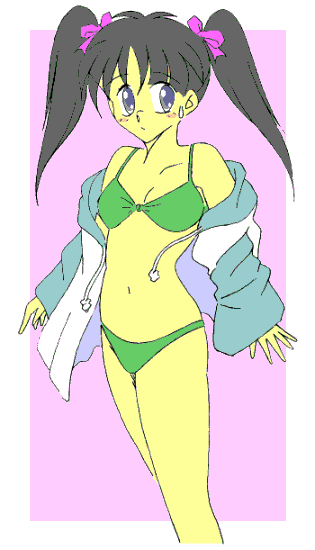
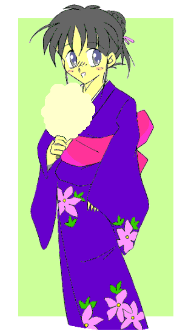

その時、目の前にいる三匹の異形の生物――すなわち魔獣の一匹が、ニヤリと笑ったような気がした。
そして先頭の一匹の影に他の二匹が隠れると、俺に向かって猛然とダッシュしてきた。
｢くそっ！！ なめるなっ！！｣
俺はそう叫びながら、軽くジャンプして先頭の一匹の攻撃をかわした。
白いミニスカートの裾がフワリと広がる。
（ううっ、やっぱりミニスカートは恥ずかしくて戦闘向きじゃないぜ……）
一瞬そんな考えが頭をよぎるが……空中に浮かんだ俺に向かって二匹目の魔獣が攻撃を仕掛けてきたのを見て、その考えを振り払う。
襲い掛かる魔獣の爪、しかし俺は足元の魔獣の身体を踏みつけてわずかに身体の位置をずらし、襲いかかって来たそいつにカウンターパンチを叩き込んだ！！
グルルルウオォォォッッ！！
踏みつけられた方の魔獣が低く唸る。もしかしたら、｢俺を踏み台にしたぁ！？｣と言ったのかも知れないが、そんな事はどうでもいい事である。
三匹目はさらに高く飛んで頭上から俺に襲い掛かろうとしたらしい……が、
｢アクアストーム！！｣
青色のコスチュームを着た美少女戦士――ミラージュブルーの必殺技が、その三匹目の魔獣を捕らえた！！
……足場もないのに高く飛び上がれば標的にされるだけなのに、馬鹿な奴である。
一匹目と二匹目の魔獣もバランスを崩して近くの地面に転がった。そこに俺ともう一人の戦士の必殺技が炸裂する。
｢ライトニングスマッシュ！！｣
｢フレイムトルネード！！｣
三匹の魔獣は水と光、そして炎に包まれてその姿を消した。
｢楽勝、楽勝。魔獣が何匹攻めて来ても、あたしたちの魅力の前にはみんなイチコロよ｣
｢おいおいっ！！ 何が『あたしたちの魅力』なんだよ！！ それに……｣
明るく笑いながらＶサインをする赤色のコスチュームの美少女戦士――ミラージュレッドのその言葉に、俺は文句を言った。
そして俺が切った言葉をつなぐようにして、ブルーが言葉を続けた。
｢最近の魔獣は強くなった。知恵がついたというかチームワークが出てきたというか……｣
そう、梅雨が明けるくらいまではいつも同じだった魔獣の攻撃パターンが、夏に入ってから少し変わり始めた。
一匹と思って一人で追いかけると他の魔獣が待ち伏せしたりとか、今回みたいに○ェットス○リームア○ックをかけてきたりとか……
しばらくその場で沈黙していた俺たちだったけど、それを打ち破るかのようにレッドが口を開いた。
｢じゃあもうすぐ夏休みなんだしさ、みんなで強化合宿をしない？｣
｢｢強化合宿ぅ！？｣｣
｢そうよ。敵がパワーアップしてきてるなら、こっちも特訓して向こうに負けない力をつければいいのよ｣
｢し、しかし特訓なんてどんな事をすればいいんだよ？｣
｢そおねえ……例えば三人で円を描きながら高速で走ってジャンプして空中ですれ違う、『ミラージュ車輪』とか――｣
｢おいっ！！｣
｢あるいは三人でタイミングを合わせて、水面から上半身や脚だけを出して華麗な動きで技をきめるとか……｣
｢何の特訓だっ！？ 何のっ！？｣
変身美少女戦士ミラージュガール
第四話：夏の海は危険がいっぱい！？
作：ライターマン
｢さあ、着いたわよ｣
母さんの運転する車に乗って３０分、目的地に到着した俺たち三人は車から降りると目の前にある建物を見た。
そこは少し大き目のお寺の本堂だった。
｢うっわー、ふっるーい！！｣
後ろの座席から降りた、いかにも生意気そうな奴が開口一番こんな事を言った。
｢でも造りはしっかりしているし、手入れも行き届いているみたいだよ｣
続いて降りてきて優しげな表情を見せた少年は、こう言って少し感心したように本堂を見ていた。
ここは新間市の海水浴場である白木ヶ浜の近くにあるお寺で、母さんの親戚が住職をしているところだそうだ。
｢本堂の隣に、修行僧が来たときに寝泊りするところがあるのよ。今は誰も使ってないから、そこで３日間寝泊りする事になるわ｣
｢ようし、それじゃさっそく水着に着替えて海へ行って泳ぎまくって女の子に声をかけて……｣
ゲシッ！！！
｢遊びに来たんじゃないんだぞっ！！ 強化合宿に来たんだろうが！！ 強化合宿にっ！！｣
俺ははしゃいでいた生意気な奴の頭を殴ると、その襟首を掴んで叫んだ。
そう、俺たちは自分を鍛えるためにここに来たのだ。今俺たちが戦っている相手に負けないために……
自己紹介しておこう。
俺の名前は三代武士（みしろ･たけし）。１３歳だけど、夏休みが明けて９月になると１４歳になる。
私立津留木（つるぎ）学園に通う中学二年生で、名前と一人称の｢俺｣という言葉でも分かるように、俺はれっきとした男である。
だけど俺は時々、破壊と混乱を好む邪霊界からやってくる魔物と戦うために正義の美少女戦士ミラージュガールに変身している。
……好きで美少女戦士に変身してるなんて思わないでくれ！！
２０数年前は俺の母さんがミラージュガールの一人で、その時変身に使っていたブローチを、俺が引越しのときに見つけたのがそもそもの始まりだったんだ。
母さんの思い出話を聞きながら変身のキーワードを俺が口にした途端、女の子にしか効かず、しかも力を失って記念品の筈のブローチが作動したのだ。
俺の身体はみるみるうちに女の子に変化し、白き光の美少女戦士ミラージュホワイトに｢レジスト｣されてしまった。
幸い(？)な事に、変身を解除してから１０時間が経過すると元の身体に戻るものの、それまでは女の子として過ごさなければならないので恥ずかしくてしょうがない。
今母さんと一緒に降りてきた猫は、実は精霊界から来た妖精ペルティノで、俺はいつも「ペル」と呼んでいる。
小さな動物であれば何にでも変身できる能力を持っていて、主に魔物の探索を行なっている。
昔母さんたちが閉じた筈の邪霊界からの｢扉｣が開いた事を察知した精霊界は、ペルと新たなブローチをこの世界に送ってきた。
しかし精霊界のその動きを予め想定していた邪霊界は、精霊界とこの世界の間にある種の結界を張ったらしい。
ペルは何とか無事だったものの、ブローチは砕けてしまい、止むを得ず母さんたちのブローチの力を復活させる事になった。
そのブローチがなぜか男の俺を適格者と認めてしまい、俺はミラージュホワイトとして戦わなければならなくなったのだ。
さっき降りてきた男のうち、優しそうな顔を見せた方が古木祐一（ふるき･ゆういち）。
俺のクラスメイトなのだが、こいつも俺と同じく青き水の美少女戦士ミラージュブルーに変身する。
最初に女の子の状態でこいつと出会った時、俺はこいつが同じ美少女戦士だとは知らなかったから、その場をごまかすために思いっきり｢女の子｣のふりをした。
そのためこいつは女の子の俺に恋心を抱いていたようで、俺の正体を知った時は超特大の衝撃を受けていた。
その後俺はこいつに謝り、一緒に魔物退治や遊びに出かけたりして今では友人として付き合ってる。
そしてもう一人、生意気そうな顔のこいつがミラージュガールの問題児、赤き炎の美少女戦士ミラージュレッドこと礼戸一明（れいと･かずあき）である。
そう、こいつも変身すると女の子になるのだ。
だがこいつは変身しなくても時々女装しては女の子のふりをする困った奴（しかもそれなりの美少女に見えるのだから、始末に悪い）なのだ。
最初にこいつと出会った時、女装したこいつの言葉に俺たち――というより俺が振り回されたのだが……そのときの事はもう思い出したくない。
このように現在のミラージュガールは、その正体が全員男！！ というとんでもない事になっている。（繰り返し言っておくが、少なくとも俺と古木はなりたかった訳じゃない！！）
何故このような事になったのか？ 他の二人は変身解除後すぐに男に戻るのに、何で俺だけしばらく女の子のままなのか？ ……という事については、精霊界でも原因は分かっていない。
｢せいっ！！｣｢はっ！！｣
礼戸の放ったパンチを俺は右手をわずかに動かして払った。
｢腕だけ使っても力は出ないぞ！！ 足と腰を使ってもっと早く強く打つんだ！！｣
俺は礼戸にこう言ってアドバイスをする。
もっとも俺だって、「身体全体を使った攻撃」とか、「連続して技を出すための流れるような動き」などというのがそんなに出来るわけじゃない。
まして相手の気を読み動きを察知する、なんてチンプンカンプンである。
今の言葉は、新間市に来る前にいた町で俺に格闘技を教えてくれた師匠のうけうりである。
｢あーっ、もう！！ 一日中こんな練習とか掃除とかしていられるかっ！！ 少しくらいは遊んだっていいだろっ！？｣
炎天下の練習に耐えかねたのか、礼戸の奴はそう叫んですね始めた。
俺たちが寺に来てから一日、本堂とその周りの掃除から始まって草むしり、座禅、食事の準備、一夜明けてからランニングや柔軟運動の基礎訓練や今のような模擬格闘をしている。
遊び出来てる訳じゃない！！ と分かっているつもりの俺だけど、少しくらい遊んでも……という気持ちがあるのも事実だった。
俺たちの気持ちを察したのか模擬戦を見ていた母さんがクスリと笑った。
｢そおねえ……せっかく海に来てるのに泳がないというのもかわいそうだから、今の練習が終わったら自由行動にしましょう｣
｢｢やったぁ！！｣｣
｢じゃあもう少しの間がんばってね。……あら、どうしたのペルティノ？｣
母さんの言葉に俺たちははしゃいだが、母さんの隣で猫の姿をしていたペルが全身を総毛立たせている事に気がついた。
｢気配がします……邪霊界との『扉』の気配が……｣
ペルティノの言葉に、俺たちは一気に緊張した。
ペルの案内で、俺たちは海水浴場から少し離れた海沿いの岸壁に上るための道を進んでいた。
｢この先にその『扉』とやらがあるのか？｣
｢おそらく……もうそろそろで現われると思います｣
｢現われる？｣
｢『扉』が開く場所は一定してないんです。この世界から少しだけ離れたところを彷徨っていて、ときどき繋がるようになってるんです｣
｢そんなもの閉じられるのか？｣
｢ミラージュガール三人の協力が必要ですが、出現した『扉』を捕らえて固定し、通れないように蓋をする事が出来ます｣
そんな会話を交わしてるうちに、俺たちは岸壁の頂上近くの林の中に到着していた。
｢出ました、あれです！！｣
その言葉に俺たちがペルの視線を追うと、地上約１メートルの場所に黒い｢染み｣のようなものが浮かび出ていた。
｢あれが『扉』か……じゃあ行くぞ、みんな！！｣
｢うーん……美少女戦士なんだから、『行くわよ、みんな！！』って言った方が――｣
ゲシッ！！ ｢……ふざけてる場合かっ！！｣
俺は礼戸の奴を殴りながら、古木は黙ってうなずきながら、そして礼戸は頭を抱えながらブローチを取り出した。
｢｢｢ミラージュマジック ･ ミラクルチャージ！！｣｣｣
するとブローチが光り出し、続いて俺たちの衣服が光の粒子に変わっていく。
光の粒子はそれぞれの周りを回り出し、裸の状態の俺たちは光に包まれた。
光に包まれた俺の身体が徐々に変化していく。
髪がサラサラになって長くなり、腰のあたりまで伸びていく。
肌が白くなり、指や腕、それに足がスラリと細くなっていく。
腰の部分が大きくなり、逆にウエストの部分が細く括れていく。
そして胸の部分が少しずつ膨らみ、やがて二つの丸い塊になる。
おのおのの身体の変化が終わると、俺たちを囲んでいた光の粒子が集まり始める。やがてそれらは光沢のある白い生地で出来た服とミニスカート、手袋、ブーツ、ヘアバンドになって俺たちの身体を包み、そしてブローチが胸の中心に固定された。
変身を終えた俺の姿は腰まで届く長い髪をなびかせた女の子になっていた。他の二人は髪の伸びはわずかだけど、髪型や顔つきを含めたその姿は俺同様、完全に女の子のそれになっていた。
｢早く三人で『扉』を囲んでください！！ 『扉』が見えなくなると次に現われるまで閉じる事が出来なくなります！！｣
｢分かった！｣
変身を完了した俺たちは、ペルの言葉どおり｢扉｣を囲むようにして立った……が、その時｢扉｣から三匹の魔獣が飛び出した。
｢くそっ、出たな！！ レッド、ブルー、こいつらをさっさと片付けて『扉』を閉じるぞ！！｣
俺は魔獣たちを睨みつけながら二人に声をかけたんだけど、返事は意外なところから返ってきた。
｢困りますよ、そんな事をされてはこちらの計画が台無しになってしまいます｣
その声は魔獣たちの背後から聞こえた。
そして現われた姿に俺たちは息を呑んだ。
それは魔獣とは明らかに違っていた。二本の足でしっかりと立ち、歩いてくる姿はどこか人間を思わせた。
だけどそれは人間とも違っていた。金色に光る目、大きく裂けた口、異様に長い腕、そして鋭く尖った指先……
｢やれやれ、危ないところでした。まさか『扉』が現われるのを待ち伏せされるとは思いませんでした。次からはもっと早く来るようにした方がいいですね｣
｢気をつけてください。こいつ……『魔人』です！！｣
｢なにっ！！｣
ペルの言葉に俺は驚きの声を上げた。
こいつが｢魔人｣……魔獣を操り、この世界に混乱と破壊をもたらそうと画策し、強大な力を持つ者。
だが魔力がほとんど無いこの世界では、存在し続ける事は出来ないと聞いていたのに……
｢あなた方がミラージュガール、精霊界の力を行使する者たちですね。お会い出来たのは嬉しいのですが、あなたたちの存在は少々邪魔になってきました。せっかくですから今ここで排除させてもらいます｣
魔人の言葉に俺たちは身構えた。
そんな俺たちに魔獣が近付き襲い掛かろうとした。だか魔人はそれを手で制し、合図をすると魔獣たちは走り去って姿を消した。
｢くそっ！！ 逃がすかっ！！｣
レッドがそう叫んで飛び出し、魔人に殴りかかった！！ しかし魔人はそれを余裕でかわすと、レッドに向かって腕を振り下ろした！！
｢ぐっ！！｣
間一髪避ける事はできたものの、バランスを崩したレッドは地面に転がった。
｢この野郎！！｣
今度は俺が魔人に殴りかかる。右ストレートを繰り出し踏み込んだ右足を軸にして左足で後ろ回し蹴り、そして左足が着地したのと同時に右足で蹴り上げた！！
……が、魔人はこの連続攻撃を全てかわしきった！！
そして俺と魔人が互いに組み合ってる間、ブルーとレッドが魔人に攻撃を仕掛けているのだが、魔人はその全てを避けるか受け止めるかして平然とした表情を崩さなかった。
｢やばいっ、『扉』が消える｣
俺たちが戦っている間に｢扉｣は徐々にその姿を失いつつあった。
焦る俺だったが魔人と戦っている今はどうにも出来ず、｢扉｣はとうとうその姿を消した。
｢さて、そろそろ終わりにしましょうか？｣
魔人はそう言って俺たちの顔を見ると、ニヤリと笑った。
｢ブルー、レッド、ちょっと聞いてくれ｣
俺は二人の側に行くと小声で話しかけた。
二人は頷き、俺とレッドはそれぞれ左右に散って魔人を取り囲んだ。
魔人の正面にいるブルーが両手をクロスし水平に広げると周りに白い靄が生じ、いくつもの水の塊が空中に浮かぶ。
｢アクアストーム！！｣
叫んでブルーが右腕を魔人に向けると水の塊は集まりながら魔人へと向かう！！ ……ただしこいつは威力を少し弱めてある。
｢フン、その程度の技｣
魔人はせせら笑うと、目前に迫った水の塊を余裕で避けようとした……が、
｢フレイムトルネード！！｣
レッドの叫びと共に立ち上る炎！！ しかし炎の柱は魔人ではなくブルーの放った水の塊を包み込んだ！！
バウウゥゥゥゥ―――ン！！
炎に包まれた水の塊は爆音を上げながら蒸発し、魔人の周りは水蒸気に覆われた！！
｢何っ！？｣
｢うおぉぉっ！！ ライトニングスマアァァ――ッシュ！！｣
魔人の一瞬の隙を突いて懐に飛び込み、掌底と共に放った光の塊は魔人の体内で爆発……する筈だった。
｢なっ、そんな馬鹿な！？｣
俺の放った光の塊は掌底を打ち込んだ脇腹で受け止められ、魔人の｢ムンッ！！｣という気合と共に砕け散った。
｢ク……フハハハハハ。なかなかやりますね。どうやら長居が過ぎたようです。私は結界の中に戻らねばなりませんが、次に出てくる時は決着をつけてあげましょう。それではまた。クッククククク……｣
魔人は笑い声とともに、いずこともなく消え去った。
戦いが終わり、俺たちは寺に戻って本堂に集まった。
ペルや母さんも含め、声を出す者は誰もいなかった。
圧倒的な強さ、意表を突いて放った筈の必殺技もダメージを与える事すら出来なかったのだ。
しばらく座り込んでうつむいていた俺たちだったが、突然礼戸が立ち上がった。
｢こんな事をしてもしょうがない。こうなったからにはやる事は一つだ｣
｢何を……するんだ？｣
｢海に出て思いっきり遊ぶ！！｣
礼戸の言葉に俺と古木はひっくり返った。
｢何考えてんだ、お前は！？｣
｢うるさい！！ 今のように敗北感を引きずったまま考えたって、いいアイデアなんか浮かぶもんか！！ とにかく今は戦いを忘れて気持ちを切り替えて……対抗策はそれから考えよう｣
礼戸の言葉に俺はハッとなった。
確かにそのとおりだった。座り込んでいた間、何とかしなければと思っていても頭の中がグルグル回って何も考える事が出来なかったのだ。
母さんもクスッと笑うと、
｢そうね、確かに礼戸君の言うとおりだわ。それじゃあ、とりあえず今日は戦いを忘れて楽しむ事にしましょう｣
と言った。
｢そうだな……礼戸と古木は海に行ってこいよ。俺はここで適当に時間をつぶしておくから｣
｢三代は行かないのか？｣
｢この身体用の水着は持ってないからな｣
変身を解いた今の俺の身体は、女の子のままだ。変身をしたのがちょうどお昼だったから、だいたい夜の１０時までは今の身体のままということになる。
｢俺、持ってるぜ女性用の水着――｣
そう言って礼戸がバッグの中から取り出したのは、確かに女性用の水着だった。
｢何でお前がそんな物を持ってるんだ！？｣
｢あら、女の子だったらこのくらいの準備は当然よ｣
礼戸は突然女の子の口調になって、しなを作った。
｢ええいっ、男の格好でそういうのは止めろっ！！ そんな物を着て人前に出れるかっ！！｣
｢でもここにいたって気分転換にはならないぜ。せっかく持ってきたんだからさ、これ着けて一緒に行こうぜ｣
そう言って、礼戸は水着を持った手をグイッと俺に突き出してくる。
｢うっ……か、母さん｣
｢あたしも見たいわ。真奈美の水着姿｣
俺は母さんに助けを求めたが、無情にも母さんは礼戸の側についてしまった。
｢くそっ！！ 古木、お前はどうなんだよ。お前も見たいのか？｣
俺は古木のほうを見るとこう言って尋ねた。
古木は顔を真っ赤にして２、３歩下がり、しどろもどろになりながらこう答えた。
｢そ、その……無、無理して着なくても………… で、でも ・・・や、やっぱり ・・・見たいかも・・・・・・｣
｢…………｣
古木の言葉は後半ほとんど消え入りそうだった……が、それは俺の心に致命的なダメージを与えた。


（おわり）
おことわり
この物語はフィクションです。劇中に出てくる人物、団体は全て架空の物で実在の物とは何の関係もありません。
あとがき
どうも、ライターマンです。
ミラージュガール第四話お楽しみいただけましたでしょうか？
主人公の武士君を襲う危機また危機。(笑)
強力な敵、魔人の登場により物語はいよいよ佳境に……ってとこなんでしょうけど、予定を変更して次回はちょっとインターバル的なお話にします。
どのような話になるかは読んでみてのお楽しみって事で。
それではまた。
戻る
□ 感想はこちらに □